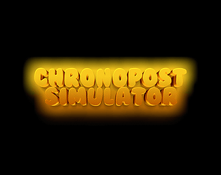

← Tous les projets
Course & livraison · Game jam
ChronoPost Simulator
Livrer les colis le plus vite possible, en évitant les obstacles sur la route.
- Unity
- C#
- Windows
- Cadre
- Winter Game Jam 2024
- Moteur
- Unity
- Langage
- C#
- Plateforme
- Windows
01
Le projet
ChronoPost Simulator est un jeu 3D de course et de livraison réalisé pendant la Beginner’s Jam Winter 2024. Le joueur doit distribuer les colis d’une ville en évitant les obstacles. Le projet a été publié sur itch.io sous le nom SHARKstudio.
02
Ma participation
- Participation à la création d’un jeu de livraison en équipe.
- Prototypage et intégration rapide dans le temps limité de la game jam.
- Finalisation collective d’une version jouable publiée sur itch.io.
03
Ce que j’en retiens
Cadrer le projet et prioriser une boucle de jeu complète.
Passer du prototype à une version jouable dans un délai court.

ChronoPost Simulator
Retrouvez la version jouable et les informations de téléchargement sur la page du jeu.
Télécharger sur itch.ioCONTACT
Me retrouver
Mes jeux et mon code.